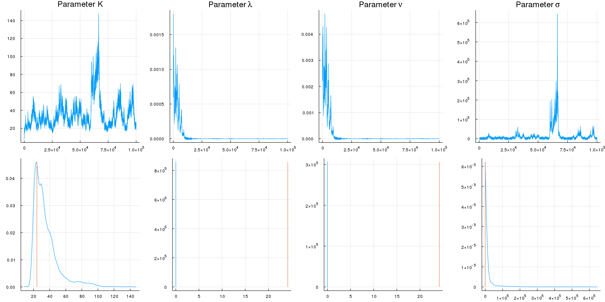
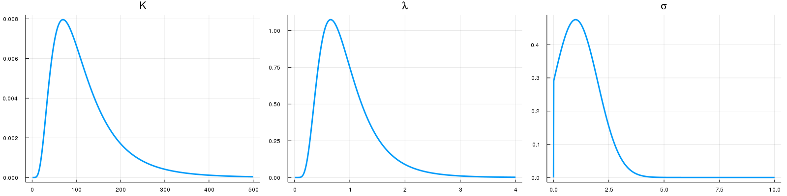

MCMC
In the initial attempts of MCMC model fitting, the priors for all the parameters are kept flat so that the parameter space could be fully explored. However, a great number of samples (genes) exhibit unexpected behaviours with zero λ and ν as well as hugely inflated σ (Figure 2, All Flat). These may be caused by failure in numerical computation of the analytical solution for extreme parameter ranges, and are affecting the evaluation of MAPs. Thus it becomes reasonable to set priors for some parameters.

It has been documented that in a telegraph model, the active transcription rate K and the switching on rate λ is relatively constant, whereas the switching off rate ν can vary across scales depending on the mean mRNA number (6). Since some parameters might be correlated, it is reasonable to start with trying priors for K or λ and avoiding for ν. A first try with lognormal prior for λ and truncated normal prior for σ (Figure 3) does not fully eliminate the aberrant behaviour: ν still tends to zero while K starts to inflate (Figure 2, λ and σ). Eventually a lognormal prior for K is also required (Figure 3) to produce reasonable parameters (Figure 2, K and λ and σ).

Ideally with infinite length of time the MCMC chain should converge to the legitimate posterior distribution. However time is limited and the parameters can be trapped at small values since the variance for the proposal distribution (or step size) is proportional to the parameter value at the previous step. Therefore implementing a prior that relies on biological knowledge can potentially give rise to more reasonable parameter inference. The final choices of priors for K and λ (16) and the flat ν (6) are all based on experimental and theoretical evidences, while the prior for σ is arbitrarily decided to prevent its inflation.